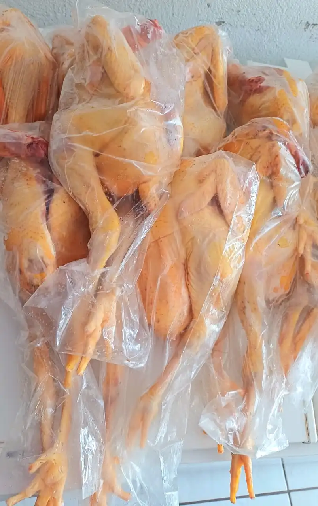
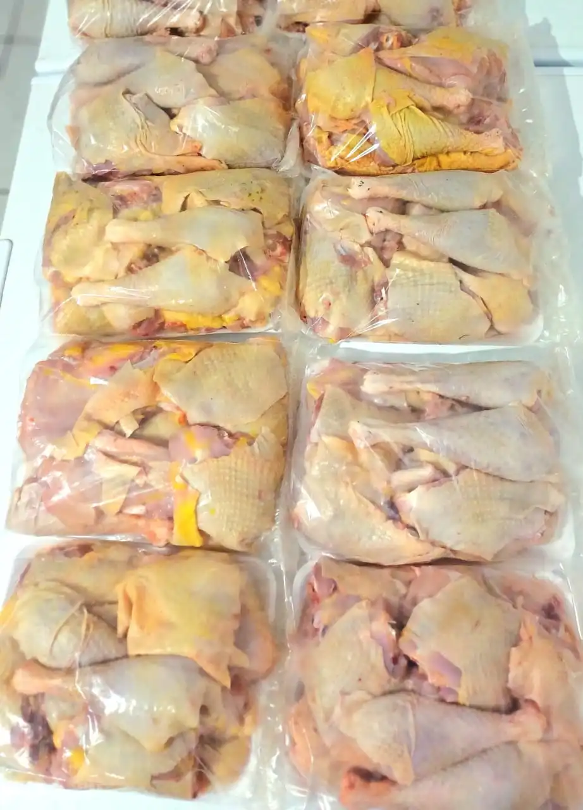
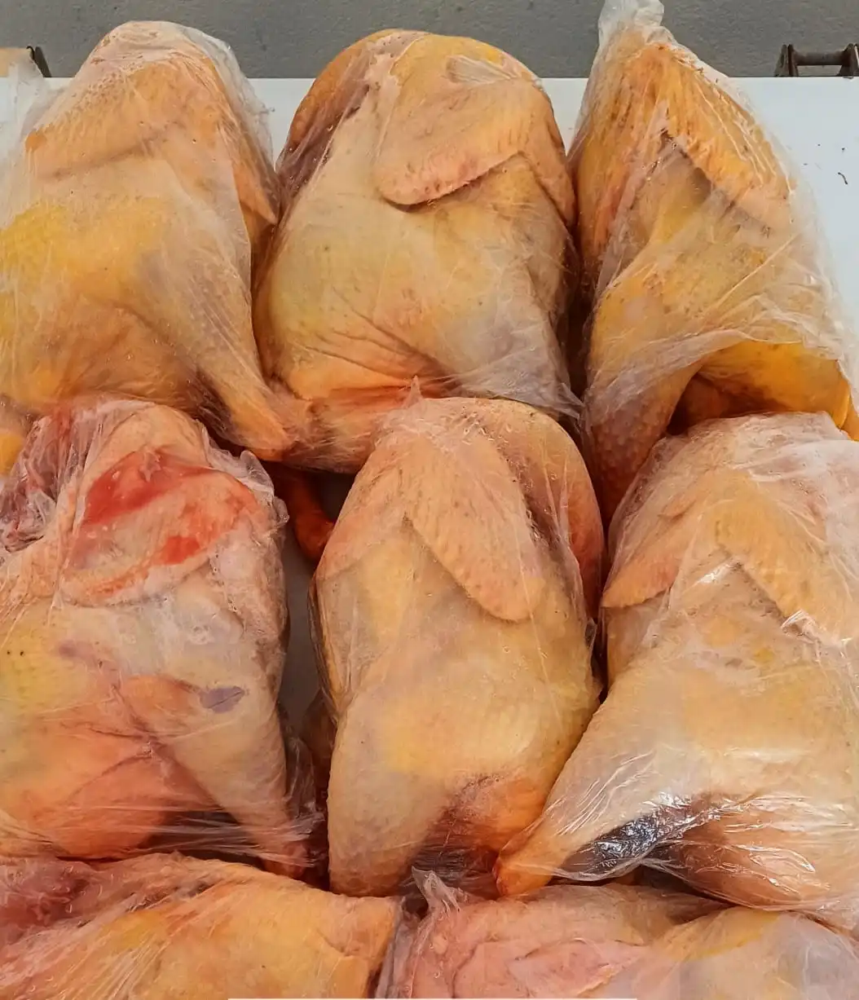
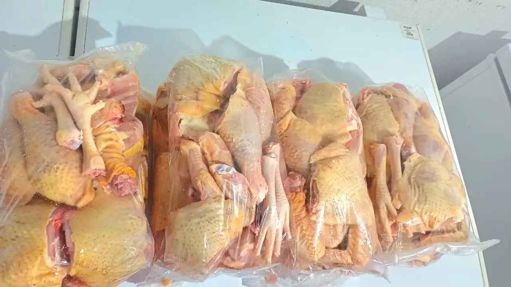

Frango Caipira e Semi-Caipira
Escolha o Tipo e Corte:
Retire na loja: R. Bom Jardim, 379 — Centro, Cáceres.
Frango Caipira: Criação ao Ar Livre, Sabor que a Indústria Não Alcança
Existe uma diferença fundamental entre o frango embalado no supermercado e o frango caipira criado nas fazendas do interior de Mato Grosso — e essa diferença vai muito além do preço. O frango de granja industrial passa toda a sua vida confinado, com movimento restrito, crescendo artificialmente rápido por conta de promotores de crescimento e ração com antibióticos. O resultado é uma carne aquosa, com pouca gordura, de sabor neutro e textura mole. Já o frango caipira vive solto, cisca, corre, ingere insetos, grãos e ração caseira sem químicos, e leva pelo menos o dobro do tempo para atingir o peso de abate. Essa diferença de vida se transforma diretamente em qualidade de carne.
Caipira Puro e Semi-Caipira: Entenda a Diferença
Na Peixaria Rio Paraguai, trabalhamos com duas categorias de frango caipira para atender diferentes necessidades e orçamentos:
- Frango Caipira Puro: Criado exclusivamente em regime extensivo — solto o tempo inteiro —, alimentado com ração natural por pelo menos 85 dias antes do abate. Carne com textura firme, sabor intenso e pronunciado, gordura distribuída naturalmente. Ideal para galinhada, caldo de frango, frango à passarinha e assado lento no forno.
- Frango Semi-Caipira: Criado com acesso a piquetes ao ar livre, com período extensivo menor. Carne um pouco mais macia, sabor igualmente superior ao convencional, com custo mais acessível. Ótimo para preparo rápido no forno, churrasqueira ou frigideira.
O Segredo da Galinhada Pantaneira
A galinhada é, sem dúvida, o prato mais representativo do interior mato-grossense — e com o frango caipira ela atinge outro nível. O segredo está na paciência: use o frango picado com osso (que libera colágeno durante o cozimento), refogue em gordura bem quente com alho, cebola, tomate e cheiro-verde até a carne dourar. Adicione o arroz ainda cru, cubra com água quente na proporção adequada, tampe e cozinhe em fogo médio. A firmeza da carne caipira garante que os pedaços cheguem ao prato inteiros, com o sabor do frango impregnado em cada grão de arroz. Finalize com cheiro-verde fresco e sirva com mandioca frita — combinação que resume a alma da culinária caipira de Cáceres-MT.
Como Encomendar e Retirar
O frango caipira é um produto de disponibilidade variável, sujeito aos ciclos de criação das fazendas parceiras. Para garantir o frango no ponto certo — nem novo demais, nem passado —, trabalhamos com encomendas pelo WhatsApp. Informe se prefere o caipira puro ou o semi-caipira, inteiro ou picado, e nossa equipe separará o pedido com antecedência. Retire fresco na nossa loja em Cáceres-MT, na Rua Bom Jardim, 379, no Centro.